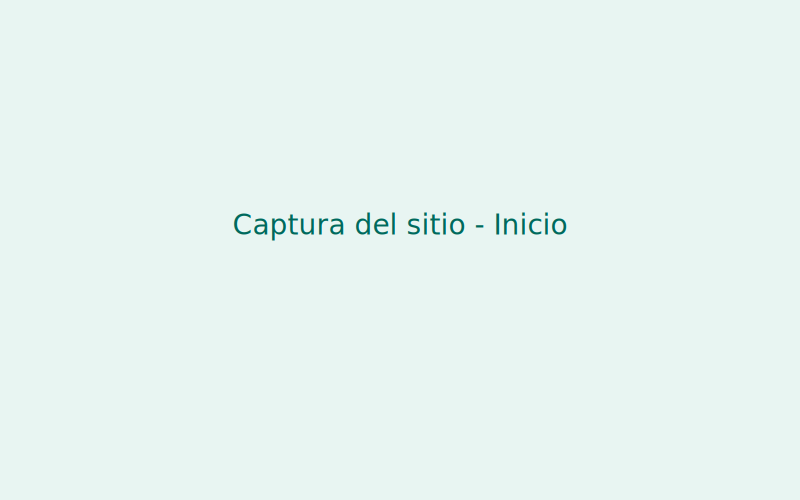
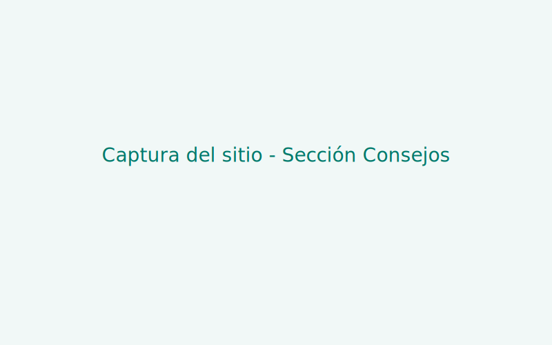

Problema
En la escuela se desperdicia energía eléctrica por mantener luces y aparatos encendidos innecesariamente. Esto incrementa el consumo y contribuye al cambio climático.
¿Cómo podemos reducir el consumo de energía eléctrica en nuestra escuela?
Propósito del Proyecto
Promover el uso responsable de la energía eléctrica mediante la creación de una página web educativa que oriente a los estudiantes sobre cómo ahorrar energía y cuidar el medio ambiente.
Consejos para ahorrar energía
- Apaga luces y dispositivos cuando no los uses.
- Aprovecha la luz natural siempre que sea posible.
- Desconecta los cargadores cuando termines de usarlos.
- Usa focos LED, son más eficientes y duraderos.
- Reduce el uso de aire acondicionado o calefacción excesiva.
Datos curiosos
- Un foco incandescente desperdicia el 90% de la energía en forma de calor.
- Si cada estudiante apaga su computadora 30 minutos antes, se puede ahorrar la energía suficiente para encender una lámpara por 10 horas.
- El uso de energías renovables puede reducir las emisiones globales en un 60% para 2050.
Reflexión final
Los estudiantes aprendieron a usar herramientas digitales para crear un prototipo que fomenta el cuidado del ambiente. Este proyecto demostró que la tecnología puede ser un medio poderoso para generar conciencia ecológica.
Prototipo (evidencias)
Enlace a la presentación: Descargar presentación del proyecto (PPTX)
Capturas:
 